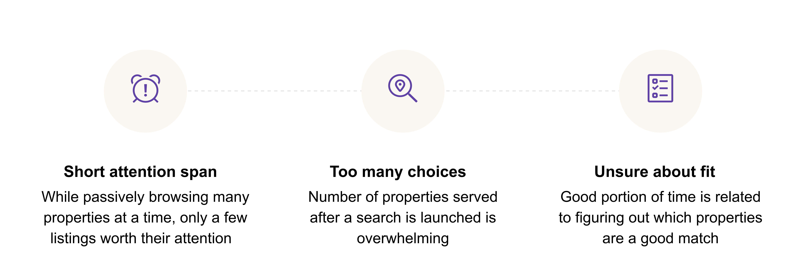
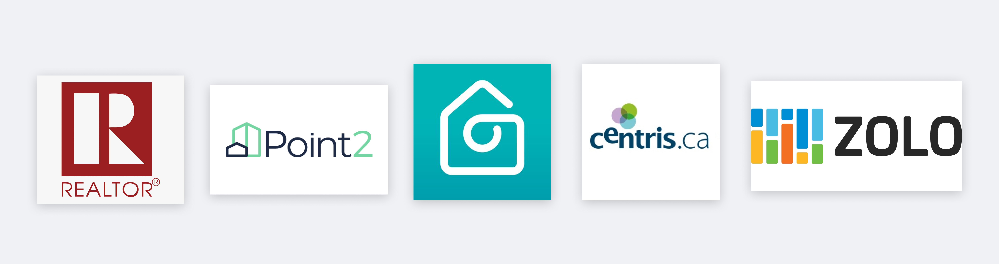

| Client | My Role | Skills |
|---|---|---|
| Chimney AI | Product Designer | User experience design Interaction design Prototyping |
Context
Chimney wants to be known as a place where you can find your dream home in a matter of minutes with the help of AI-powered recommendations based on buyers’ preferences and priorities.
For our MVP, the team wanted to find a way to integrate a map as a part of the results page, however it was unclear how users should be able to interact with the map.
Discovery
Understanding the home buyer
To save on resources and time for our MVP, we created a provisonal persona based on existing market data and industry knowledge the team already collect to make assumptions about a home buyer's search process and pain points.
Understanding the business
Stakeholder interviews were up next. Understanding the preliminary product vision and business drivers with stakeholder interviews to understand all the layers of information needed was vital to know what was important and what wasn't.
Must haves
- 3 zoom levels: municipality, neighbourhood block, and property level
- Transparency: buyers need freedom to explore outside what we recommend
- Consistent with list results: map must coordinate with list results
Understanding the market
Studying map design patterns from other real estate sites, and general accommodation booking sites, gave me an understanding of existing map functionaliaties and opportunities for Chimney. One takeaway was that some sites use heatmaps, but for a single such as school quality or crime rates in a neighbourhood. Replicating a similair pattern for entire neighbourhoods based on the scores that Chimney calculates for users was central to the concepts I intially drafted.
Design
How might we help buyers find a property with more confidence and less effort with a map?
To frame the user goals of this project, I chose an Experience Outcome (above). Next, I sketched a quick & dirty concept to share with stakeholders to align on map interactions and user flow before developing detailed wireframes.

As the design iterations progressed, we moved away from “this map should give a preview of all the properties we have listed” towards “this map should help buyers narrow down their search of properties” by only showing property pins at the block level once a user has made a decision to view a neighbourhood in more detail.
Chimney also offers different match scores for things like neighbourhood match, property match, demographic match, etc., depending on what users input during their onboarding. However, translating these scores into a map view was a big challenge. Since we had data at the neighbourhood block level in addition to the overall neighbourhood, we decided to create a breakpoint between these two views and create two heatmaps. To let users know which heatmap was being used, labels at the top of the map were added and respective legends would change dynamically as well.
Outcome
The last piece was to start designing leveraging existing ui components in our design system and building out the remaining ui elements.
Map UI Elements

Visualizing property listing data
We hope to make it easier for home buyers to quickly browse and find properties relevant to their preferences with the help of a heatmap layered on the existing map.

Unbiased information
The heatmap outlines which municipalities and neighbourhoods best match buyers’ priorities, but we don’t prevent exploration of areas that don’t exactly match their preferences.

You've already seen this home
Previously viewed properties will be highlighted on the map so buyers don’t waste time looking at something twice (well, not intentionally anyway).

Final Design & Prototype
Next Steps & Reflection
We plan to run sets of usability tests with real users to test the assumptions we have made in developing our MVP to measure task completion rates, overall satisfaction, and keep iterating on our design. We hypothesis that by increasing the task completion rate, users can exert less effort on search and more time on viewing properties they actually like, ultimately leading to increased retention rate over time.
Our MVP is set to go live mid March 2021.
The design process is not what they teach you in school. I was brought on to the project to help design concepts for Chimney, but learned that when trying to build a new product under short timelines and with limited resources, work that is “good enough” tends to be the goal. Since we did not have any generative research at the time of the map conception, I leveraged what we had internally and made assumptions about who and why we were designing the map. I learned the art of making assumptions and worked within the constraints of the design task at hand to build a first version of a new feature, which really reinforces the notion that delivering value doesn’t follow a hard process.